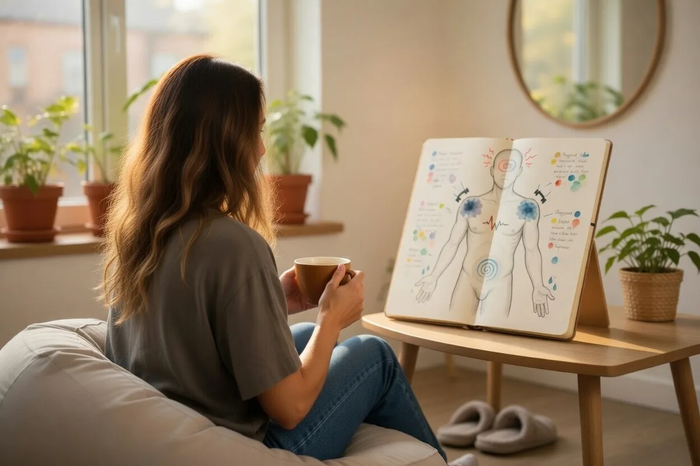

Содержание
«Просто расслабься» — один из самых бесполезных советов, которые можно дать человеку в хроническом стрессе. Как будто он сам не хочет. Как будто не пробовал.
Проблема в том, что хронический стресс — это не психологическая слабость. Это физиологическое состояние, при котором нервная система буквально теряет способность переключаться в режим покоя. Понять, как это работает — значит сделать первый шаг к выходу.
россиян испытывают стресс регулярно, по данным ВЦИОМ
повышение риска сердечно-сосудистых заболеваний при хроническом стрессе
обращений к терапевту имеют психосоматическую составляющую
При этом большинство людей живут в хроническом стрессе годами — и считают это нормой. «У всех так». «Ничего страшного». «Просто надо больше отдыхать». Но отдых не работает, если нервная система не выходит из режима тревоги.
Острый и хронический стресс: в чём разница
Стресс сам по себе — не враг. Острый стресс — это эволюционно древняя и полезная реакция. Собеседование, экзамен, опасная ситуация на дороге — организм мобилизуется: выбрасывает адреналин и кортизол, ускоряет пульс, обостряет внимание. После того как угроза миновала, нервная система успокаивается. Это норма.
Хронический стресс работает иначе. Угроза не исчезает — или организм перестаёт отличать реальную опасность от воображаемой. Дедлайн сменяется следующим. Конфликт на работе не разрешается. Тревога о деньгах, здоровье, отношениях становится фоном жизни. Нервная система остаётся в режиме боевой готовности — неделями, месяцами, годами.
Острый стресс мобилизует и проходит. Хронический стресс истощает: организм тратит ресурсы на поддержание боевой готовности — и перестаёт восстанавливаться. Это как держать двигатель на максимальных оборотах без остановки.
Особенность хронического стресса ещё и в том, что человек к нему привыкает. Тревожный фон становится настолько обычным, что его перестают замечать. «Я всегда так живу» — типичная фраза от людей, которые годами находятся в состоянии хронического стресса.
Симптомы хронического стресса: как распознать
Хронический стресс проявляется на всех уровнях — телесном, эмоциональном, когнитивном и поведенческом. Важно: не обязательно присутствие всех симптомов сразу.
Физические симптомы
- Хроническая усталость, которая не проходит после сна
- Нарушения сна: трудно заснуть, часто просыпаетесь, сон не восстанавливает
- Головные боли напряжения, особенно в затылке и висках
- Мышечные зажимы — особенно в плечах, шее, челюсти
- Проблемы с пищеварением: синдром раздражённого кишечника, гастрит, тошнота
- Снижение иммунитета: частые простуды, долгое восстановление после болезней
- Учащённое сердцебиение, ощущение тяжести в груди
Эмоциональные симптомы
- Раздражительность, вспышки гнева по мелочам
- Тревожность без явной причины, ощущение нависшей угрозы
- Ощущение «всё надоело», апатия, потеря интереса к тому, что раньше нравилось
- Эмоциональное онемение — как будто чувства стали приглушёнными
- Чувство беспомощности и потери контроля над жизнью
Когнитивные симптомы
- Трудности с концентрацией — мысли рассеиваются, сложно удерживать внимание
- Забывчивость: теряете ключи, забываете слова, упускаете детали
- «Туман в голове» — ощущение, что думать стало труднее
- Навязчивые мысли, постоянное прокручивание проблем
- Катастрофизация: привычка думать о худшем сценарии
Поведенческие симптомы
- Прокрастинация, откладывание важных дел
- Тяга к алкоголю, сигаретам, сладкому — как к быстрым способам «снять» напряжение
- Социальная изоляция: общение стало казаться слишком утомительным
- Трудоголизм или, наоборот, полная потеря работоспособности
- Пренебрежение своими потребностями — едой, сном, движением

Почему тело «застревает» в стрессе: нейробиология
Чтобы понять, почему «просто расслабиться» не работает, нужно знать, что происходит в теле при хроническом стрессе.
Главный регулятор реакции на стресс — ось ГГН (гипоталамус — гипофиз — надпочечники). При угрозе гипоталамус даёт сигнал: надпочечники выбрасывают кортизол и адреналин. Тело переходит в режим «бороться или бежать»: мышцы напрягаются, пищеварение замедляется, иммунная система снижает активность — всё ради немедленного выживания.
В норме после устранения угрозы уровень кортизола падает. Но при хроническом стрессе этого не происходит. Кортизол держится высоким постоянно — и начинает разрушать то, что должен был защищать.
Нарушает работу гиппокампа (память и обучение) · Снижает иммунитет · Вызывает воспалительные процессы · Нарушает сон · Меняет обмен веществ · Со временем — снижает чувствительность самой оси ГГН, и организм теряет способность адекватно реагировать на стресс
Параллельно в работу включается вегетативная нервная система. Симпатический отдел («газ») отвечает за мобилизацию. Парасимпатический («тормоз») — за восстановление и покой. При хроническом стрессе «газ» постоянно нажат, а «тормоз» практически не работает.
Именно поэтому человек в хроническом стрессе не может расслабиться даже в отпуске. Нервная система не знает, как переключиться — она просто не тренировалась это делать.
Порочный круг: как усталость усиливает стресс
Хронический стресс запускает самоподдерживающийся цикл. Именно он объясняет, почему «надо просто отдохнуть» — не работает.
- Стресс — постоянная нагрузка, тревога, ощущение, что «не справляюсь»
- Истощение — тело и психика работают на износ, ресурсы истощаются
- Снижение устойчивости — то, что раньше не задевало, теперь выбивает из колеи
- Усиление реакции на стресс — нервная система реагирует острее на те же раздражители
- Нарушение сна и восстановления — кортизол мешает нормально спать, восстановление не происходит
- Ещё большее истощение — круг замыкается
Часто к этому добавляются дисфункциональные убеждения: «я должен справляться сам», «отдыхать — значит быть слабым», «если я остановлюсь, всё рухнет». Именно с ними работает КПТ — потому что они поддерживают цикл на уровне мышления.
Техники КПТ: что реально помогает
КПТ при работе со стрессом действует на двух уровнях: регулирует нервную систему через тело и меняет мыслительные паттерны, которые стресс поддерживают. Вот четыре техники, с которых можно начать.
Активация парасимпатической нервной системы
Это самый быстрый способ переключить нервную систему с «газа» на «тормоз». Удлинённый выдох активирует блуждающий нерв — главный проводник парасимпатической системы.
- Сядьте удобно. Выдохните весь воздух через рот.
- Вдохните через нос на счёт 4.
- Задержите дыхание на счёт 7.
- Медленно выдохните через рот на счёт 8.
- Повторите 4 цикла. Делайте это дважды в день — утром и перед сном.
Эффект не мгновенный — нервная система учится новому режиму постепенно. Через 2–3 недели регулярной практики большинство людей замечают снижение фонового напряжения.
Работа с катастрофизацией и тревожным мышлением
При хроническом стрессе мышление автоматически уходит в худший сценарий. Дневник мыслей — базовый инструмент КПТ для работы с этим.
- Когда замечаете всплеск стресса или тревоги — запишите ситуацию: что происходило?
- Запишите мысль, которая появилась: «Я не справлюсь», «Всё пойдёт не так», «Они решат, что я некомпетентен».
- Оцените интенсивность тревоги от 0 до 10.
- Задайте себе вопросы: «Какие есть доказательства, что это правда? А против?», «Что бы я сказал другу в такой ситуации?», «Какой реалистичный сценарий?»
- Запишите более взвешенную мысль. Снова оцените тревогу.
Цель — не «думать позитивно», а думать точнее. Большинство катастрофических мыслей не выдерживают проверки фактами.
Восстановление контакта с тем, что важно
Хронический стресс часто возникает, когда мы тратим время и силы на то, что не соответствует нашим ценностям — или вообще теряем их из виду. Эта техника из ACT (терапия принятия и ответственности) помогает восстановить ориентиры.
- Возьмите лист бумаги. Нарисуйте крест — четыре квадранта.
- В левом верхнем: «Что я хочу больше в своей жизни?» (ценности, действия)
- В правом верхнем: «От чего я хочу уйти?» (боли, избегания)
- В левом нижнем: «Что мешает мне двигаться к ценностям?» (мысли, страхи)
- В правом нижнем: «Что я делаю, чтобы избежать дискомфорта?»
- Посмотрите на картину целиком. Где вы сейчас застряли — и к чему хотите двигаться?
Стресс часто указывает на разрыв между тем, как мы живём, и тем, как хотим жить. Это болезненно — но это важная информация.
Структурированный отдых вместо «когда-нибудь отдохну»
При хроническом стрессе восстановление откладывается до «потом» — которое никогда не наступает. КПТ предлагает включить отдых в расписание так же, как включены рабочие задачи.
- Запишите три типа восстановительных активностей: физические (движение, сон, телесные практики), эмоциональные (общение с близкими, творчество) и ментальные (чтение, тишина, природа).
- Выберите по одной из каждой категории на следующую неделю.
- Впишите их в календарь — с конкретным временем. Не «когда будет время», а «вторник, 19:00».
- Отнеситесь к этим пунктам как к встрече, которую нельзя отменить без веской причины.
Большинство людей в стрессе откладывают восстановление, потому что «ещё не заслужил» или «слишком много дел». Это убеждение само по себе поддерживает стресс — и с ним стоит поработать.
Когда нужна помощь специалиста
Техники самопомощи работают — особенно при умеренном стрессе и на ранних стадиях. Но есть ситуации, когда самостоятельной работы недостаточно.
Хронический стресс часто переплетается с другими состояниями: тревожным расстройством, выгоранием, депрессией, психосоматическими симптомами. В этих случаях важно не просто «снизить уровень стресса», а разобраться с корневыми причинами — убеждениями, паттернами поведения, иногда с травматическим опытом.
В своей практике я работаю с хроническим стрессом методами КПТ и EMDR (ДПДГ). КПТ помогает изменить мыслительные паттерны и поведение, которые поддерживают стресс. EMDR эффективен, когда за хроническим напряжением стоит накопленный травматический опыт — события, которые нервная система так и не смогла переработать.
Стресс длится более 6 месяцев · Симптомы нарастают, а не проходят · Появились психосоматические симптомы (боли, нарушения сна, проблемы с ЖКТ) · Самостоятельные попытки не дают устойчивого результата · Вы замечаете признаки выгорания или депрессии · Стресс влияет на отношения, работу, качество жизни
Частые вопросы о хроническом стрессе
Узнаёте себя в этих симптомах?
На консультации мы разберём вашу ситуацию — источники стресса, убеждения, которые его поддерживают, — и выстроим план работы.
- Онлайн, для жителей России и всего мира
- КПТ и EMDR — подходы с доказанной эффективностью
- Знакомство 20 минут — бесплатно